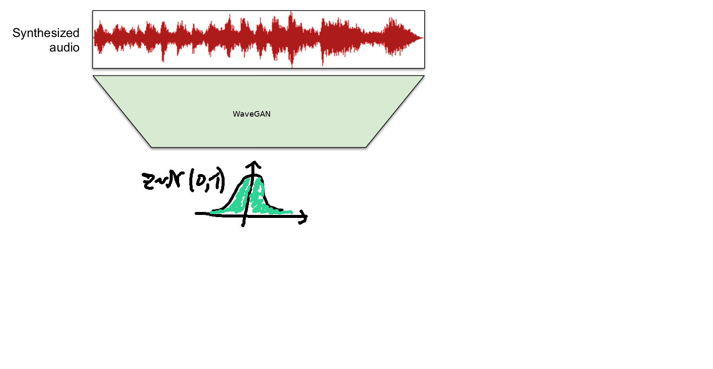

Audio waveform synthesis using deep learning
- motivation
- introduction to sound and acoustics,
- some challenges with audio synthesis,
- generative methods, and
- take a look at a recently proposed adversarial methods.
test audio
Overview of audio synthesis using deep learning
- Reference: "Generating music in the waveform domain", by Sander Dieleman
- https://benanne.github.io/2020/03/24/audio-generation.html
Why audio?

Why audio?

Frequency representation
- for human and computational analysis we often use spectrograms
- shows the local frequency content of the signal over time
Frequency representation
Spectrograms represent both amplitude and the phase


What is hard about the phase?
- it is an angle: $\phi \in [0,2\pi)$ and it wraps around,
- effectively random as amplitude tends to 0,
- absolute phase less meaningful,
- relative phase matter perceptually,
Why waveforms?
- by modelling the waveform we are implicitly modelling the phase
- waveform modelling common in the generative setting
- magnitude spectrograms common in the discriminative setting
Challenges for machine learning to model waveforms?
- high dimensional data
- cyclic dependencies common
- long ranging dependencies
Generative models
- Dataset $X$ of examples $x \in \mathcal{X}$
- $x \sim p(x)$, assumed i.i.d
- learn generative model $p(x|\theta)$ that approximates $p(x)$
Conditional generative models
- Dataset $X,Y$ of examples $x \in \mathcal{X}$ and $y \in
\mathcal{Y}$
- $x,y\sim p(x,y)$
- learn generative model $p(x|y; \theta)$ that approximates $p(x|y)$
- explicit: allows $p(x|y; \theta)$ and $x \sim p(x|y; \theta)$
- implicit: allows only $x \sim p(x|y; \theta)$
Different model settings
- likelihood-based models
- autoregressive models: e.g., WaveNet
- flow-based models: e.g., WaveGlow
- adversarial models
Adversarial model
- $\mathcal{L} = \mathbb{E}_{x} [log D(x)] + \mathbb{E}_{z}[log(1-D(G(z)))]$
- discriminator trained to maximizes this loss
- generator trained to minimize it
- pro: realistic samples
- con: usually less diverse
Mode-covering vs. mode-seeking

Problem categorization

Problem categorization
- densely conditioned and sparsely generated output: e.g., waveform to piano-roll (low variability)
- sparse condition and sparse-ish output: e.g., noise to piano-roll, MIDI
- dense-ish condition and dense output: e.g., text or spectrogram to waveform
- sparse condition and dense output: e.g., noise to waveform (high variability)
Sparse condition and sparse-ish output
Mogren, 2016, NeurIPS workshop
Sample 1
Sample 2
Wave2MIDI2Wave
Hawthorne et. al, 2019, ICLR
defined MIDI to audio
learned MIDI to audio
Sparse condition and dense output

Donahue et. al, 2019, ICLR
WaveGAN piano
Adversarial audio synthesis (Donahue et. al, 2019)
- more likely to exhibit periodicity
- correlations across large windows common
- need larger receptive fields
- alteration of DCGAN
DCGAN (Radford et. al, 2015)

WaveGAN (Donahue et. al, 2019)
- 2D kernels size 5x5 -> 1D kernels size 25
- transposed stride 2 -> 4
- remove batch norm (missing ablation)
- train using WGAN-GP (Gulrajani et al., 2017) strategy
- add one layer: 4096 -> 16384 output
SpecGAN (Donahue et. al, 2019)
- basically DCGAN
- trained on amplitude spectrograms
- Griffin-Lim to estimate phase from spectrogram
Adversarial audio synthesis (Donahue et. al, 2019)

Adversarial audio synthesis (Donahue et. al, 2019)
MelGAN (Kumar et. al, 2019)
- learned model for Mel spectrogram inversion
MelGAN: Generator
- condition: mel-spectrogram
- output: waveform
- residual blocks with dilated convolutions
- stride and kernel-size carefully chosen to mitigate "checkerboard patterns"
- normaliation technique important: use weight normalization
MelGAN: Discriminator
- multi-scale architecture
- $D_1$, $D_2$, $D_3$: raw audio donwsample 1, 2, and 4 respectively
- intuition: each discriminator biased towards different frequecies
- window-based objective
SpecGAN + MelGAN
- SpecGAN: noise to spectrogram
- MelGAN: spectrogram to waveform